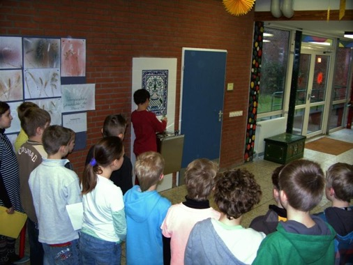

Trinken ist nicht nur nach dem Sportunterricht, sondern auch sonst wichtig. Nur wer ausreichend trinkt, kann sich gut konzentrieren und arbeiten. Deshalb war die Freude groß, als am 17.01.2014 im Rahmen des Projektes „gesunde Schule“ der Trinkbrunnen
in der Pausenhalle der Schule eingeweiht wurde. Nun können die Schülerinnen und Schüler entweder am Wasserspender direkt trinken oder aber ihre Trinkflasche auffüllen.
Wir danken allen, die die Anschaffung und Installation des Trinkbrunnens möglich gemacht haben und lassen uns das kühle Nass schmecken!
Bürgermeister Lars Wunsch, Herr Steenbock (Elektrofirma), Herr Schröder (Heizungsfirma) und Schulleiter Herr Kayser mit Fritz, der den Trinkbrunnen einweihen durfte.

Die Klasse 4 b, die als erste Klasse den Trinkbrunnen ausprobierte.